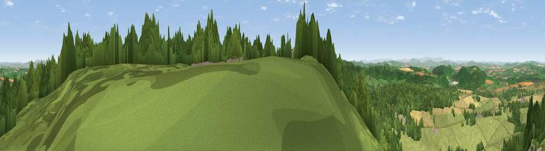

Viewpoint near Bailey Lane End
#3441 in England · top 9% of its area beats it · near Bailey Lane EndWhere it is
The exact computed spot (SO 65025 20088). Click the marker for map links.
The view, rendered

A 360° render of this exact spot computed from the terrain model, tree cover and land cover — summer colours, afternoon light, calibrated against photographs of famous viewpoints. Real trees, hedges and buildings will differ in detail.
The panorama
Grey silhouette: terrain skyline in each direction (720 bearings, Earth curvature and refraction included). Dashed green: skyline with trees (+15 m) and buildings (+8 m) as obstacles. Blue strip: how far the ground is visible on each bearing.
Where the view opens
Wedge length = distance to the farthest visible ground on that bearing (vegetation-aware). Rings at 10, 25 and 50 km.
What fills the view
48% grassland · 37% woodland · 14% cropland ·
Angular shares of the visible panorama (visual magnitude), not map area. Landscape diversity 0.45 (0–1 Shannon).
Key numbers
More beautiful places nearby
The staircase of upgrades: each row has a higher view potential than everything closer. Driving times are estimates from straight-line distance, calibrated against real road routing — check an actual route before setting out.
| Place | Direction | Drive | Score |
|---|---|---|---|
| Viewpoint near Ruardean | SW · 4 km | ~9 min | 74.2 |
| Viewpoint near May Hill | ENE · 5 km | ~10 min | 76.1 |
| Chase Wood Hill | WNW · 5 km | ~12 min | 77.6 |
| Viewpoint near Woolhope | N · 14 km | ~25 min | 80.7 |
| Viewpoint near Putley | N · 18 km | ~31 min | 80.9 |
| Viewpoint near Tarrington | N · 19 km | ~32 min | 81.4 |
| Seagar Hill | NNW · 19 km | ~33 min | 82.1 |
| Ragged Stone Hill | NNE · 20 km | ~33 min | 82.5 |
51.87825, -2.50948 · source: screening · position refined by local search. Computed location — check access rights before visiting.